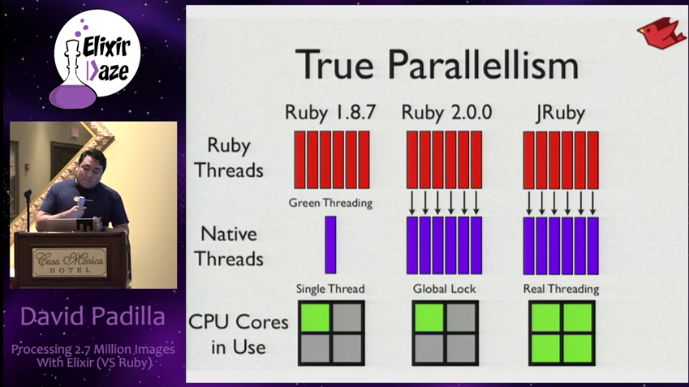

Contexto
Contexto
NOT REALLY
la ley de moore deja de cumplirse, esta situacion es insostenible
la ley de moore deja de cumplirse, esta situacion es insostenible

nuevo reto: aprovechar array nucleos
nuevo reto: aprovechar array nucleos

Concurrencia y paralelismo en Ruby
Concurrencia y paralelismo en Ruby

Sin considerar side effects (files, db, etc)
Sin considerar side effects (files, db, etc)

debido a diferentes implementaciones de
debido a diferentes implementaciones de

Dangerous Situation
Dangerous Situation

Hasta que un joven programador, parte de la core team de Ruby on Rails, aparecio.
Jose Valim
Jose Valim

se encontro con un libro
se encontro con un libro


Una red telefonica siempre debera operar independientemente del numero simultaneo de llamadas, bugs inesperados, o llevandose actualizaciones de hardware y software.
– Saša Jurić, Elixir in Action
Jose Valim, empezo haciendo un port de Ruby en el ecosistema Erlang (aprovechar casi 40 años de desarrollo)
UPSS
Terminó creando un nuevo lenguaje.
Proceso de creación (2011)
Proceso de creación (2011)

Ruby -> Elixir (Developer Joy)
Ruby -> Elixir (Developer Joy)

Erlang -> Elixir (Runtime and 40 years of libraries)
Erlang -> Elixir (Runtime and 40 years of libraries)

Clojure -> Elixir (Metaprogramación)
Clojure -> Elixir (Metaprogramación)

Elixir is what would happen if Erlang, Clojure, and Ruby somehow had a baby and it wasn’t an accident.
–Devin Torres
Thank You ʕ•ᴥ•ʔ